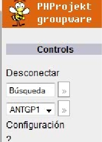

En este pequeño modulo encontramos las opciones de:
- Desconectarse (LogOut): Dar click en el titulo de desconectar para cerrar la sesión actual
- Busqueda: Mediante palabras claves buscar en cualquier modulo de PHProjekt, ya sea con un enter o dando le click al boton de a lado del edit de busqueda.
- Cambio de Grupo: Nos dice el grupo actual y nos da la posibilidad de cambiar de grupo en caso de que estemos dados de alta en otro.
- Configuración: Permite cambiar datos del perfil asi como la interfaz de PHPprojekt, sera mencionado en su sección correspondiente.
- Ayuda (?): Nos manda a un wiki con un buscador de temas de PHProjekt.
